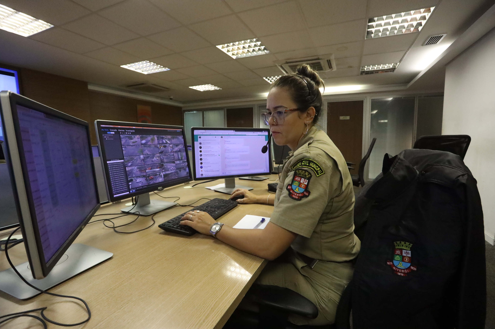

Segurança
A importância dos dados sobre segurança e prevenção à violência reflete o monitoramento contínuo das ocorrências contra a mulher, como violência doméstica, assédio e feminicídio no município de Niterói.
Acompanhar esses índices permite aperfeiçoar a rede de atendimento e proteção às mulheres, orientando ações integradas entre órgãos municipais e forças de segurança para a garantia de uma vida livre de violência.
